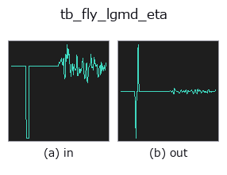

typed op• Datenarten: signal → signal
• Aufruf: fullseye.apply(img, "tb_fly_lgmd_eta", a=0.5, b=0.5) (das 2-D-Modell ist ein Bild plus zwei skalare Regler a,b∈[0,1])

*Die Abbildung ist die tatsächliche Ausgabe auf einer synthetischen 128×128-Eingabe. Links Eingabe, rechts Ausgabe. Punktwolken als Draufsicht-Streudiagramm (Helligkeit = z), 1-D-Reihen als Linie, Volumen als Maximum-Projektion entlang z, Videos als mittleres Bild, komplexe Bilder als Betrag; Rückgabewerte, die kein Bild ergeben, werden als Werte gezeigt.*
Regler a durchfahren (0,1 / 0,5 / 0,9, der andere Regler auf Standard):
▸ tb_fly_lgmd_eta: knob a sweep (docs site)
*Regler b ändert die Ausgabe nicht (gemessen: identisch bei 0,1 / 0,5 / 0,9).*
Stufen (die vorangehenden Ops → dieser Op, von links nach rechts):
▸ tb_fly_lgmd_eta: stages (docs site)
Auf anderen Bildern (synthetische Szene / Foto / Münzen. Obere Reihe: Eingaben, untere Reihe: deren Ausgaben. Regler auf Standard):
▸ tb_fly_lgmd_eta: other inputs (docs site)
> Für diesen Operator gibt es noch keine Übersetzung. Es folgt der Originaltext unverändert.
LGMD/eta looming response from an expanding subtended angle.
The multiplicative looming model::
eta(t) = theta'(t - delay) * exp(-alpha * theta(t - delay))
where *theta_signal* is the object's full subtended angle over time, in
radians. The product of the angular expansion rate and an exponentially
decaying gain gives a response that peaks a fixed time before collision.
theta_signal: the full subtended angle per sample, radians.
dt_s: the sample interval, seconds.
alpha: the gain-decay constant.
delay_s: a fixed neural delay, seconds.
Returns a 1-D float64 array `eta(t)` of the same length.
Ground truth: for an object of half-size `l approaching at speed |v|`,
`eta peaks at a time-to-contact of alpha*l/|v| - delay_s` (Gabbiani et
al. Eq. 5), where the subtended angle is exactly `2*atan(1/alpha)` (Eq. 6;
24.0 degrees for `alpha = 4.7`) — both pinned in the tests.
Raises `ValueError`: a non-1-D / empty / too-short (< 3) / non-finite
*theta_signal*, a signal over :data:MAX_SIGNAL_POINTS, a non-positive *dt_s*
/ *alpha*, and a negative *delay_s*.
Typed bridge of the flyvision op `fly_lgmd_eta into the 2-D evolution registry: the same implementation, called under the op(v, a, b) convention. a drives alpha (default 4.7); b` is unused.
• Katalog der Beispieldaten (Download-URLs / Lizenzen) — 2-D nutzt skimage.data (BSD/Public Domain) plus synthetische Bilder, 3-D nennt Download-URLs echter Datenquellen (Stanford, PDS, …).
• Herkunft und Literatur der Operatoren — die Quellen der Forschung/Verfahren, auf denen diese Operatorfamilie beruht.
Das Programm unten ist nachweislich lauffähig (gleiche Eingabe wie die Abbildung). In der Studio-Hilfe wird dieser Block zu Schaltflächen, die es sofort laden und ausführen.
img_to_signal 0.50 0.50 tb_fly_lgmd_eta 0.50 0.50
▸ Load this pipeline · Load & run
Die folgenden Beispiele rufen den zugrunde liegenden Ledger-Op fly_lgmd_eta auf. Dieser Brücken-Op ist dieselbe Implementierung, angepasst an die Konvention fn(v, a, b); das Verhalten gilt unverändert (nur die Aufrufform unterscheidet sich).
• poc_fly_vision — py -3.11 examples/poc_fly_vision.py
signal als Eingabe)identity · tb_create_funct_1d_array · tb_smooth_funct_1d_gauss · tb_smooth_funct_1d_mean · tb_derivate_funct_1d · tb_integrate_funct_1d · tb_zero_crossings_funct_1d · tb_abs_funct_1d
typed)tb_points_to_voxel · tb_estimate_point_normals · tb_iss_keypoints · tb_project_points · tb_render_point_depth · tb_statistical_outlier_removal · tb_radius_outlier_removal · tb_voxel_grid_downsample
*Provenance: ops.py — 2D Operator-Registry. Diese Notiz wird von tools/opdocs.py md erzeugt (nicht von Hand bearbeiten).*
© 2026 Kazufumi Furuse — Fullseye operator documentation. Licensed under Apache-2.0.
{kind=link}
{kind=link}
{kind=link}